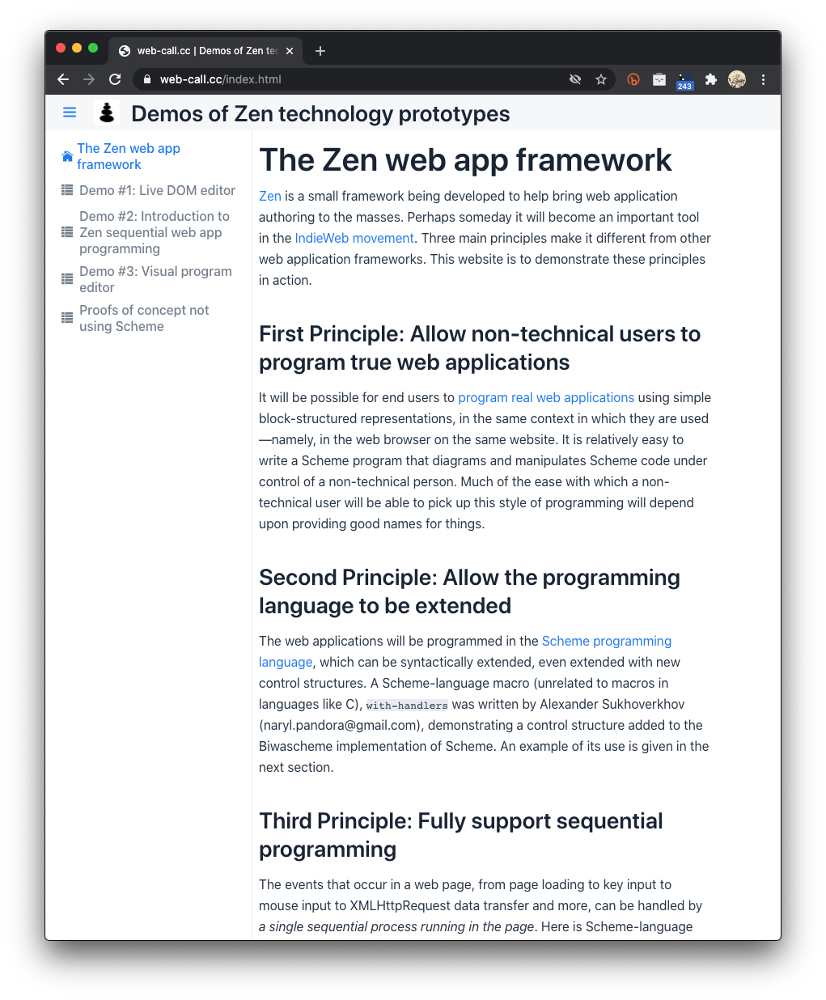
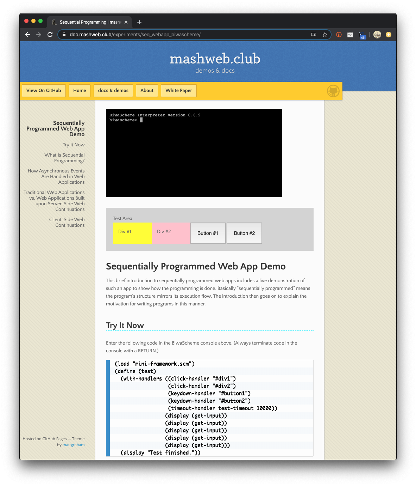

Web-call.cc's and Mashweb's JavaScript and BiwaScheme playground. Mainly demos of Zen, a toolkit to enable sequential programming of web apps. At present there's nothing on the page that you're looking at but this README. See also mashweb.club, github.com/Mashweb, github.com/Mashweb/seq_webapp_biwascheme, and github.com/tomelam. Older websites, still useful: tomelam.blogspot.com, tomelam.com. Here's a screenshot of web-call.cc's homepage, listing the demos there:  Here's a screenshot of a Sequentially Programmed Web App Demo): 